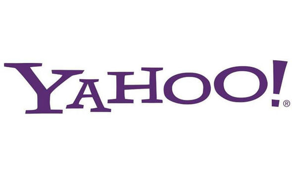

Dados do Aluno
Nome: Matheus Sant'Ana
RA: 2412111
Nome: Matheus Sant'Ana
RA: 2412111
Todos estão em risco de sofrer uma violação de dados ou ataque cibernético, independentemente do tamanho da empresa, seja ela pequena ou grande. Hackers e cibercriminosos encontram novas maneiras todos os dias para roubar informações sensíveis ou dados pessoais que podem ser potencialmente vendidos ou usados para extorsão.
De acordo com um relatório publicado pelo Centro de Recursos de Roubo de Identidade (ITRC), um número recorde de 1862 violações de dados ocorreu em 2021 nos EUA. Esse número quebrou o recorde anterior de 1506, estabelecido em 2017, e representou um aumento de 68% em comparação com as 1108 violações em 2020. Setores como saúde, finanças, negócios e varejo são os mais comumente atacados, impactando milhões de americanos a cada ano.
Muitos especialistas em cibersegurança acreditam que esse número continuará a aumentar em 2023 e além. Para ajudar a entender a amplitude e a extensão das violações de dados hoje, aqui estão as maiores violações de dados da história de empresas multinacionais.
Fonte da matéria: Clique para acessarUm vazamento de dados ocorre quando informações sensíveis ou confidenciais de uma empresa ou de seus usuários são acessadas, divulgadas ou roubadas sem autorização. Isso pode envolver dados pessoais, como nomes, endereços, números de cartão de crédito, e-mails, senhas, ou até mesmo dados corporativos sigilosos. Esses incidentes geralmente acontecem devido a falhas de segurança, como vulnerabilidades em sistemas de TI, ataques cibernéticos ou erro humano.
O impacto de um vazamento de dados na reputação de uma empresa pode ser devastador. As organizações que sofrem com esse tipo de incidente muitas vezes perdem a confiança dos clientes, parceiros e investidores, o que pode resultar em perda de negócios e queda no valor de mercado. Além disso, os usuários cujos dados foram expostos ficam vulneráveis a fraudes, roubo de identidade e outros crimes cibernéticos, o que pode ter consequências de longo prazo para sua segurança e privacidade.
Confira a tabela abaixo dos maiores vazamentos de dados da história.
| Nome da Empresa | Impacto | Logo da Empresa |
|---|---|---|
| Yahoo! | 3 Bilhões de contas comprometidas |  |
| Microsoft | 30.000 empresas nos EUA (60.000 empresas em todo o mundo) |  |
| Real State Wealth Network | 1,5 bilhão de registros vazaram | |
| Fisrt American Financial Corp. | 885 Milhões de arquivos vazaram | |
| 530 Milhões de usuários expostos |  |
|
| 700 Milhões de registros de usuários | ||
| Adobe | 38 milhões de números de cartão de crédito vazaram | |
| eBay | 145 Milhões de usuários expostos | |
| Dubsmash | 168 milhões de usuários expostos |
Para se prevenir de vazamentos de dados, é crucial adotar algumas precauções básicas. Utilize senhas fortes e únicas para cada conta e habilite a autenticação de dois fatores (2FA) sempre que possível. Mantenha seus softwares e sistemas operacionais atualizados para corrigir possíveis vulnerabilidades. Evite clicar em links suspeitos ou abrir anexos de e-mails não solicitados. Além disso, monitore regularmente se suas informações foram comprometidas em algum vazamento usando serviços como o Have I Been Pwned, que permite verificar se seus dados foram expostos em violações de segurança conhecidas.